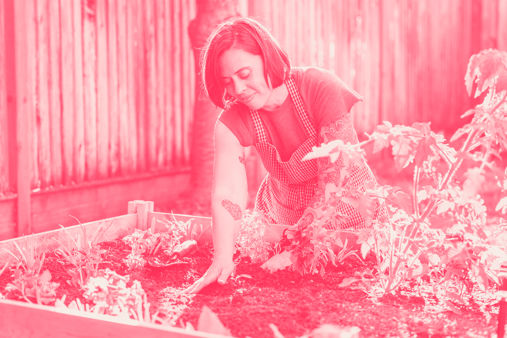
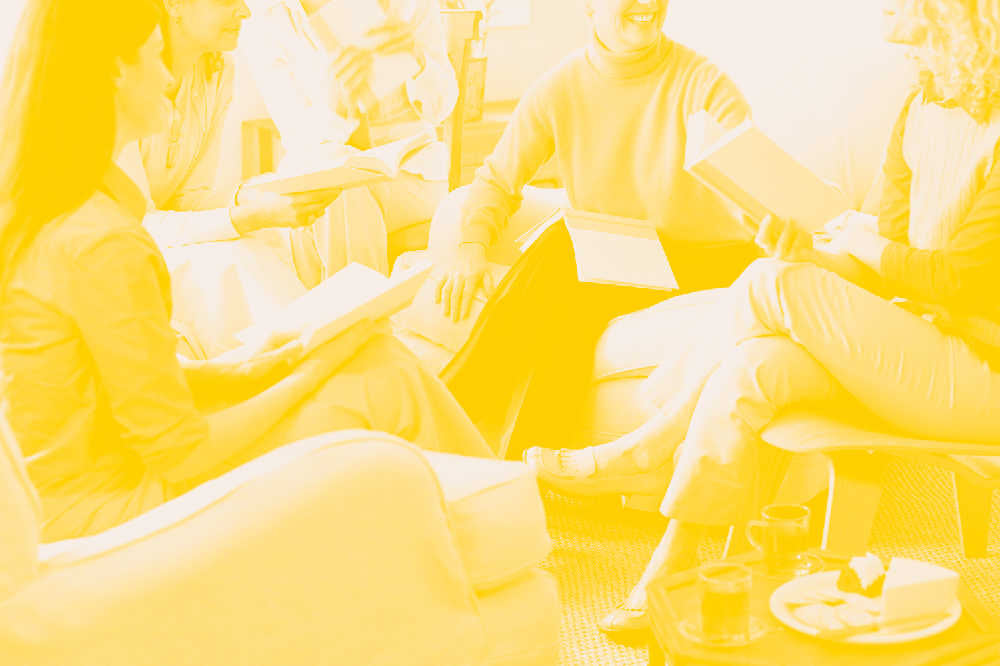
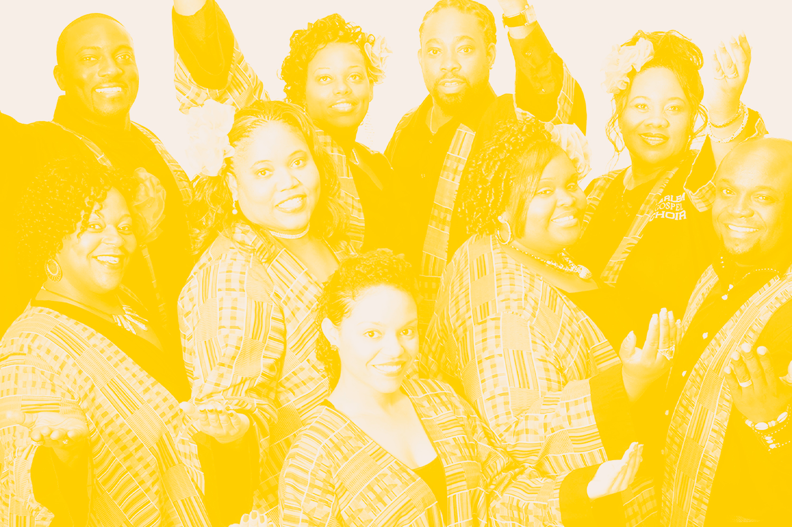
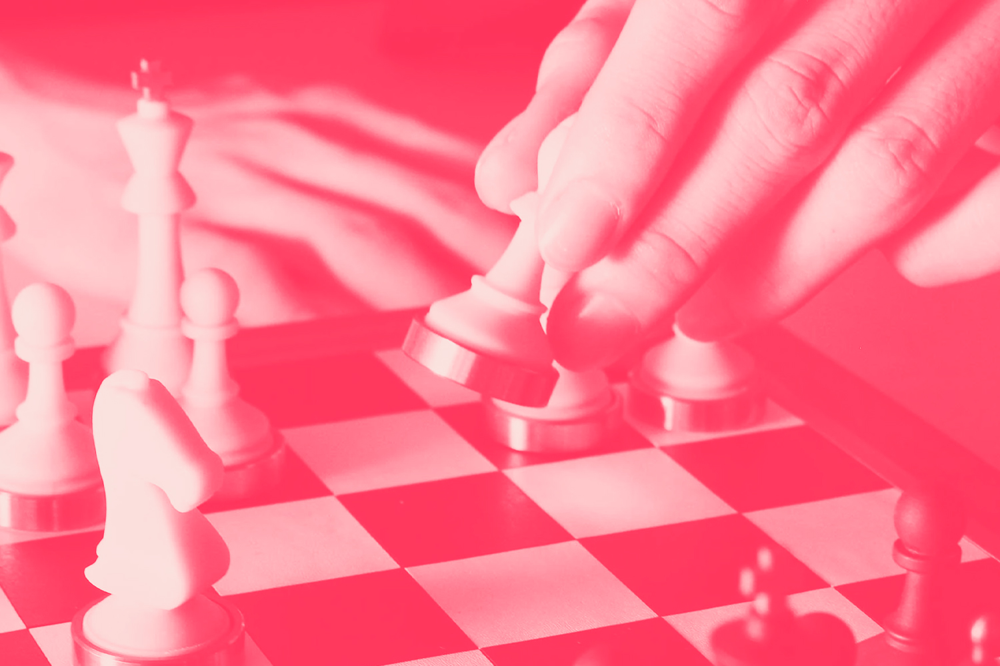
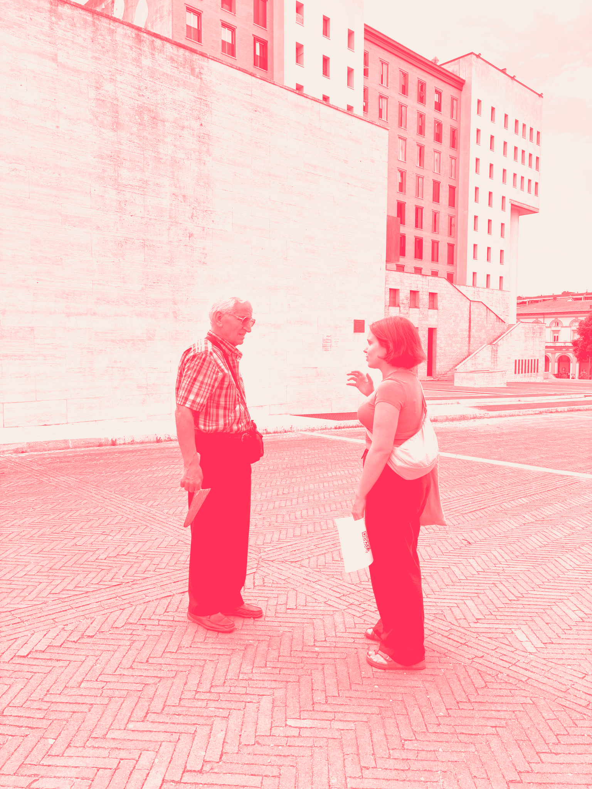
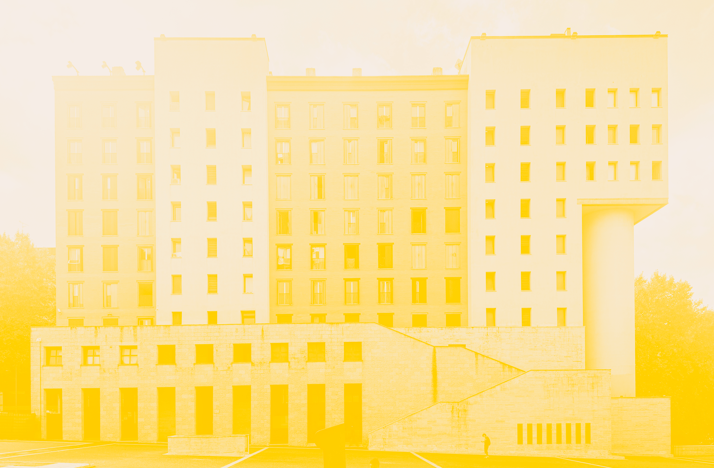
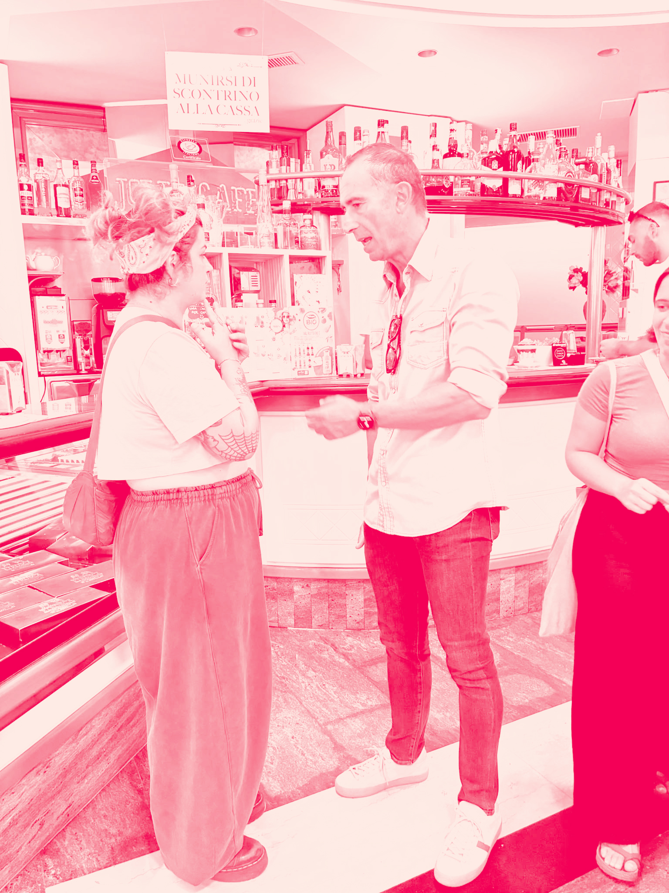
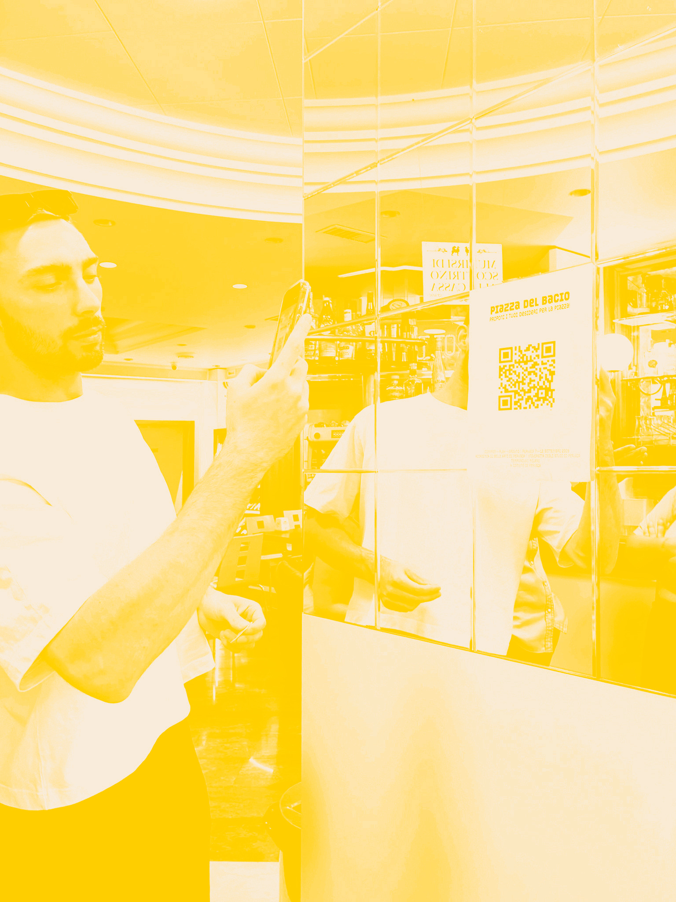
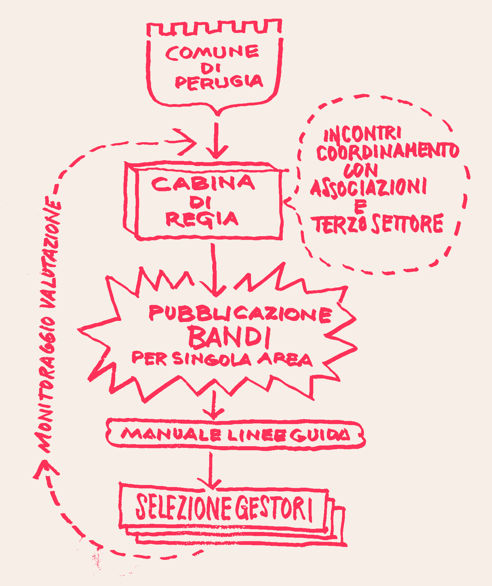

Cosa—Qui Programma di riattivazione degli spazi pubblici del Comune di Perugia
Eventi

Book Club in Piazza del Bacio
Spazio ai Giovani Talenti

Gospel in Piazza del Bacio

Torneo di Scacchi Intergenerazionale
Visualizza tutti gli eventi

Cosa
Common Playground Perugia è un progetto di rigenerazione urbana che interpreta lo spazio pubblico come terreno comune di incontro, sperimentazione e azione collettiva.
Il progetto si concentra su Fontivegge, e in particolare su Piazza del Bacio e gli spazi intorno alla stazione ferroviaria: un territorio attraversato ogni giorno da residenti, studenti, lavoratori, viaggiatori e comunità di diversa provenienza.
Attraverso pratiche temporanee, collaborative e interdisciplinari, Common Playground esplora nuovi modi di abitare e attivare questi luoghi, mettendo in relazione design, cultura, autocostruzione, economia di prossimità e partecipazione civica.
L’obiettivo è trasformare gli spazi sottoutilizzati in luoghi vivi, inclusivi e condivisi, sperimentando strumenti e processi replicabili capaci di rafforzare le relazioni tra persone, comunità e istituzioni.

Metodo
Per Common Playground Perugia abbiamo adottato la metodologia sviluppata da Temporiuso per il riuso temporaneo e la rigenerazione degli spazi pubblici.
Il processo parte dall’analisi dei luoghi e dall’ascolto delle comunità, per individuare bisogni, possibili usi e attività. Questi elementi alimentano un percorso di co-design che integra programmazione, dispositivi temporanei e forme di gestione condivisa.
L’obiettivo è costruire un modello flessibile e replicabile, capace di accompagnare la trasformazione degli spazi e di essere adattato anche ad altre aree della città.



Governance
La governance di Common Playground Perugia si basa su un modello condiviso tra istituzioni e attori territoriali. Una cabina di regia, espressione dell’ente proprietario, avrà il compito di coordinare linee guida, strumenti progettuali, identità visiva e programmazione delle attività.
Il modello prevede inoltre momenti di confronto con le realtà locali, una piattaforma digitale di dialogo, budget dedicati all’animazione degli spazi e bandi periodici per l’assegnazione della loro gestione, con l’obiettivo di garantire continuità, trasparenza e partecipazione nel tempo.